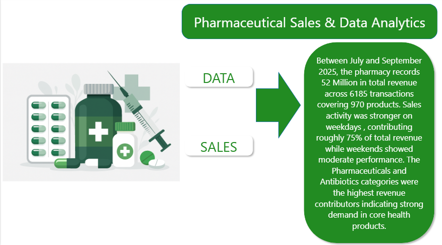
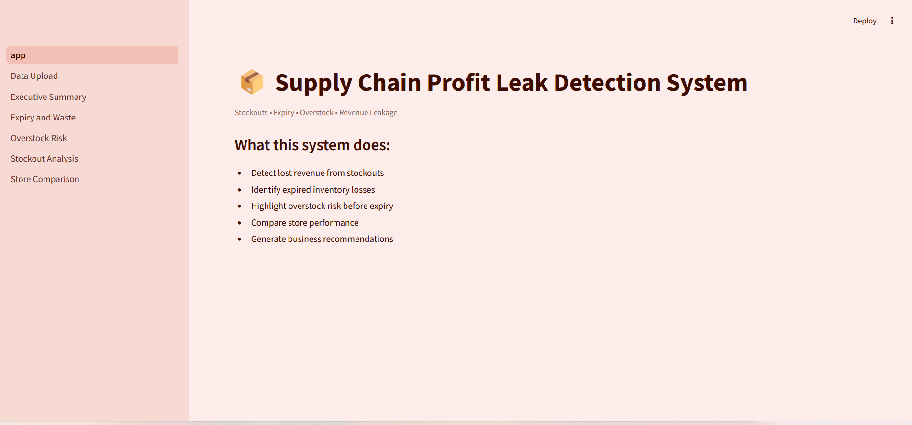
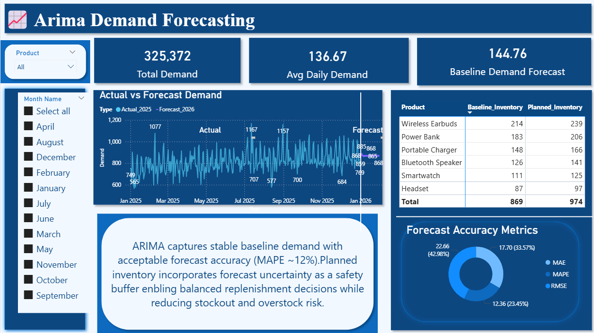
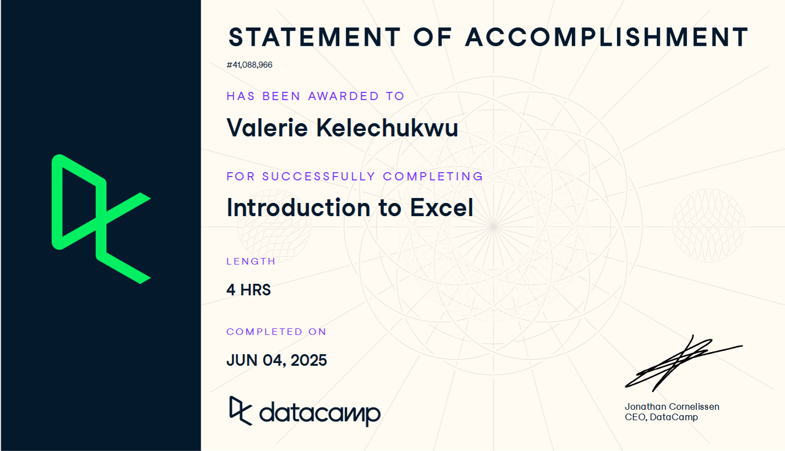
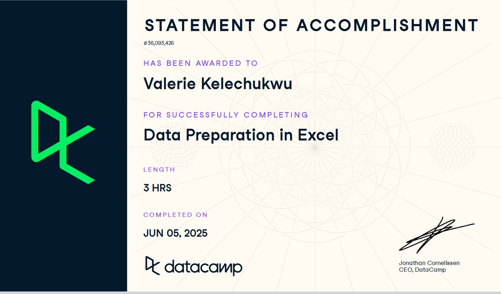
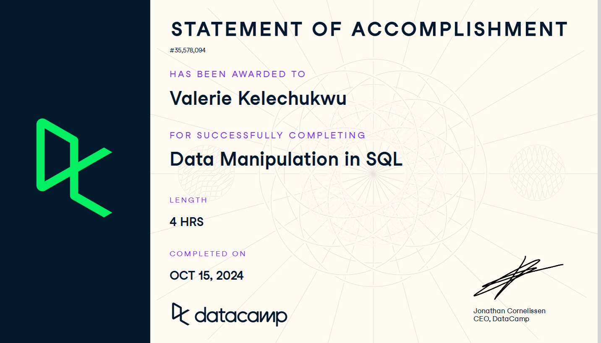
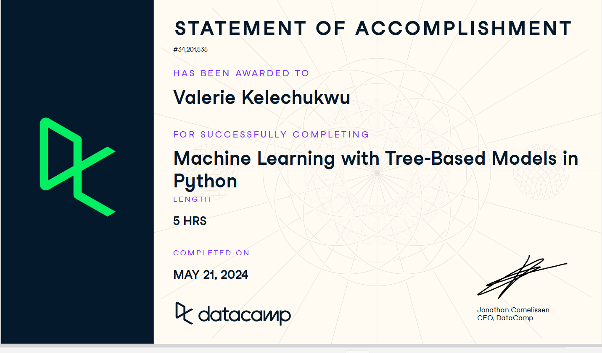
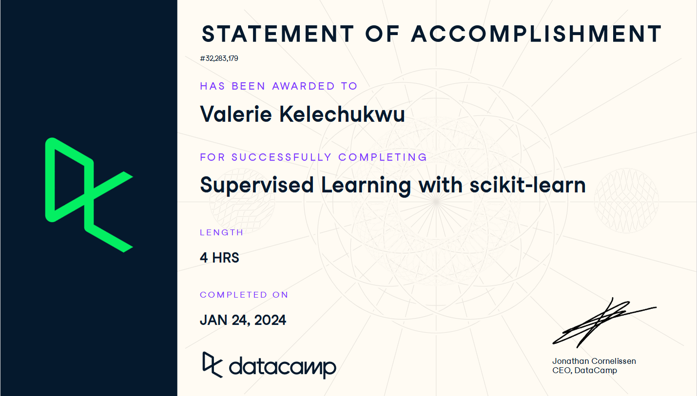

TOOLS I WORK WITH
SALES PERFORMANCE ANALYSIS
A retail business had sales data spread across multiple time periods, but lacked clarity on what was driving performance. Historical sales data was analyzed to uncover patterns across daily, weekly, monthly, and quarterly timeframes. The focus was on identifying peak buying periods, low-activity periods, and how revenue shifts over time. The outcome is a set of clear insights that support better planning, improved staffing decisions, and more effective sales strategy.

REVENUE & CUSTOMER SEGMENTATION ANALYTICS
A retail business operating across multiple countries had over 500,000 sales records generating $9.73M in revenue but lacked visibility into which customers and products were driving performance. Using SQL, Python, and Power BI, I cleaned and structured the data, analyzed customer purchasing behavior, and identified the highest-value customer segments and products. The analysis provided a clear view of sales drivers, customer value, and buying patterns, enabling more informed decisions around customer retention, product strategy, and revenue growth.

View ProjectPHARMACEUTICAL SALES ANALYTICS DASHBOARD
A pharmaceutical company had 6,185 sales transactions across 970 products but lacked clear visibility into what was driving sales performance. Product, category, and regional trends were difficult to identify, making planning and decision-making challenging. I analyzed and organized the sales data in Power BI to uncover performance trends across products, categories, and time periods. The analysis revealed key revenue drivers, top-performing categories, and important sales patterns, helping support better marketing, inventory, and product decisions.
CUSTOMER SENTIMENT ANALYSIS
Airlines collect large volumes of passenger feedback, but most of it is unstructured, making it difficult to analyze at scale and understand what drives satisfaction or complaints. Natural Language Processing (NLP) was applied to British Airways passenger reviews to classify sentiment, detect recurring themes, and identify key factors influencing customer experience across service quality, delays, and staff interaction. The result is clear, structured insights that transform raw feedback into actionable intelligence to improve service delivery and operational decisions.

View ProjectProfit Leak Detection System
An FMCG company operating across multiple retail stores in Nigeria was facing frequent stockouts, overstocking, and inventory losses, with limited visibility into where revenue was being lost or which products and locations were responsible. This analysis examines inventory and sales data to identify profit leaks caused by stockouts, overselling, and expired stock. It highlights high-risk products and stores while quantifying associated revenue losses and operational inefficiencies. The outcome is clearer supply chain visibility, enabling more effective stock management, reduced losses, and improved profitability through data-driven decisions.

View ProjectDemand Forecasting & Planning
A retail business was experiencing frequent stockouts and delayed replenishment, leading to avoidable sales loss. To address this, historical sales and inventory data were used to forecast future demand using ARIMA and Prophet models. These forecasts guide restocking decisions by estimating when demand will increase and how much inventory is required. The result is a more proactive inventory planning approach that reduces stockouts, limits lost sales, and replaces guesswork with data-driven decisions.
WORK EXPERIENCE
ICT Intern
Nigeria Security Printing and Minting | FCT, Nigeria
May 2024 — Oct 2024
Data Analyst
Oseode Technologies | Remote
Jan 2024 — Nov 2025
Virtual Assistant
Kemmsbridge Resources | Remote
Mar 2026 — Present
WORK WITH ME
When you work with me, you get more than reports and dashboards. I focus on understanding the business problem behind the data and delivering insights that support real business decisions.
What Sets Me Apart?
Many analysts focus on collecting, cleaning, and visualizing data. While those are important, I believe the real value of data comes from understanding the business questions behind it.
My approach combines data analysis with an understanding of customer behaviour, sales performance, and business operations. This allows me to connect data findings to real business outcomes rather than simply presenting numbers.
I focus on building systems that make business performance visible and measurable. Whether it's identifying revenue opportunities, uncovering inefficiencies, optimizing customer journeys, or improving reporting processes, my goal is to provide clarity that supports action.
By combining analytical thinking with operational awareness, I help businesses understand what is driving results, what needs improvement, and where opportunities for growth exist.
I don't just analyze data—I help businesses turn customer activity, sales performance, and operational data into decisions that support sustainable growth.
EDUCATION
Bachelor of Science (BSc) in Computer Science
Edo University Iyamho, Auchi, Edo State, Nigeria
Services Offered
Services Offered
- 1. Data Cleaning & Preparation
- 2. Dashboard Development & Reporting
- 3. Business & Operational Analytics
- 4. Forecasting & Predictive Analytics
- 5. Data-Driven Decision Support
CERTIFICATIONS




